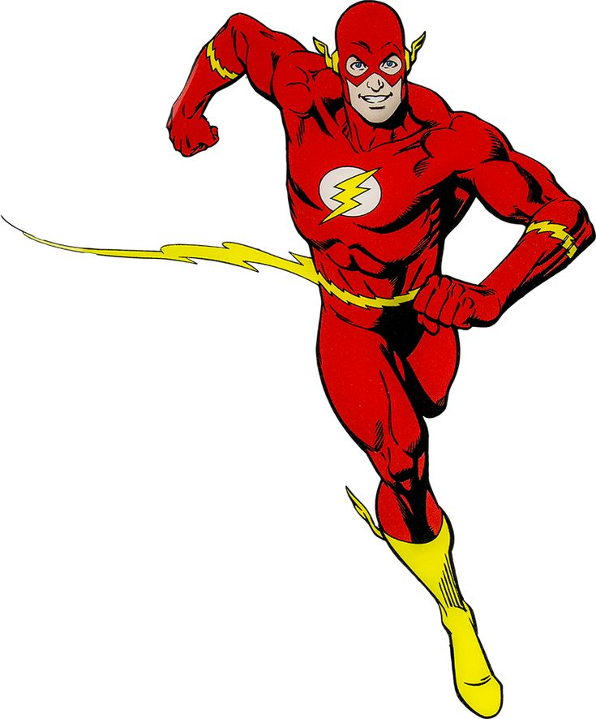

Our mission is to deliver safe, unforgettable river adventures while building confidence, teamwork, and a love for the outdoors. We believe every trip should be thrilling, guided by experts, and remembered for a lifetime.

White Water Rafting Co.
History
Founded by passionate river guides, our company grew from a small local crew into a trusted rafting team. Over the years, we have trained expert guides, improved safety standards, and expanded our river routes.